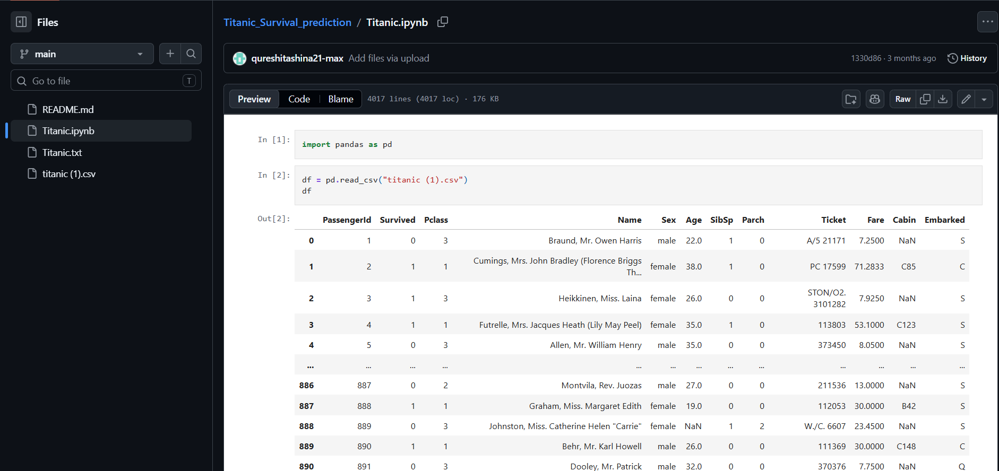
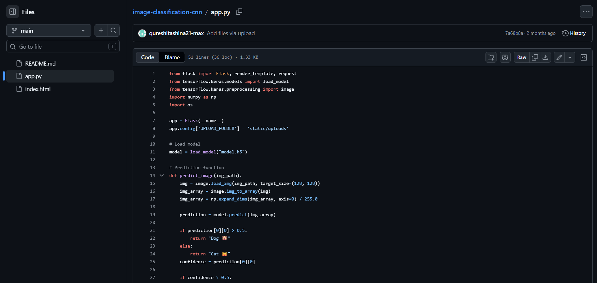

TASHINA QURESHI
Analytical and results-driven individual with hands-on experience in transforming raw data into meaningful insights. Skilled in building end-to-end predictive models, automated data extraction pipelines, and interactive reporting structures.
🛠️ Technical Skills
Programming
Python, SQL
Data & Analytics
Excel, Power BI, Pandas, NumPy, Matplotlib, Seaborn
Machine Learning
Regression models, Decision Trees, Random Forest, SVM, KNN, K-Means
Advanced Tech
Deep Learning (CNN, RNN), NLP, Web Scraping (BeautifulSoup)
📊 Academic & Practical Projects

Titanic Survival Prediction Model
Cleaned and prepared the Titanic dataset by handling missing values and encoding categorical features. Performed comprehensive EDA to identify survival drivers based on demographic variations and generated a predictive Logistic Regression matrix.

Heart Disease Prediction Engine
Engineered a supervised machine learning model capturing an 85% accuracy benchmark. Executed complete data pre-processing stages and mapped key variable importances impacting cardiovascular risk prediction outcomes.

Web Scraping & Data Extraction Pipeline
Built robust, automated data mining scripts to sweep cross-domain websites. Navigated structural Document Object Models to dynamically structuralize unstructured web outputs into accessible JSON and CSV data stores.

Image Classification System (CNN)
Engineered a multi-layered Convolutional Neural Network classifying complex target images. Deployed the analytical pipeline into an operational web-based endpoint leveraging Flask to accept user-side image streams dynamically.